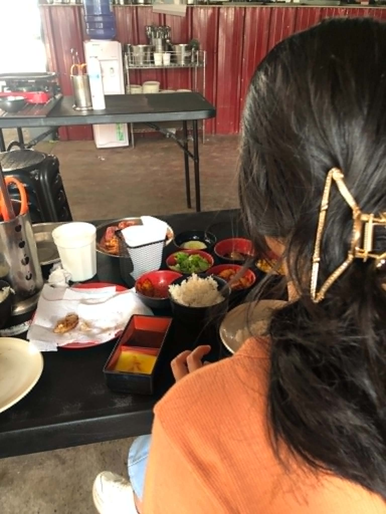
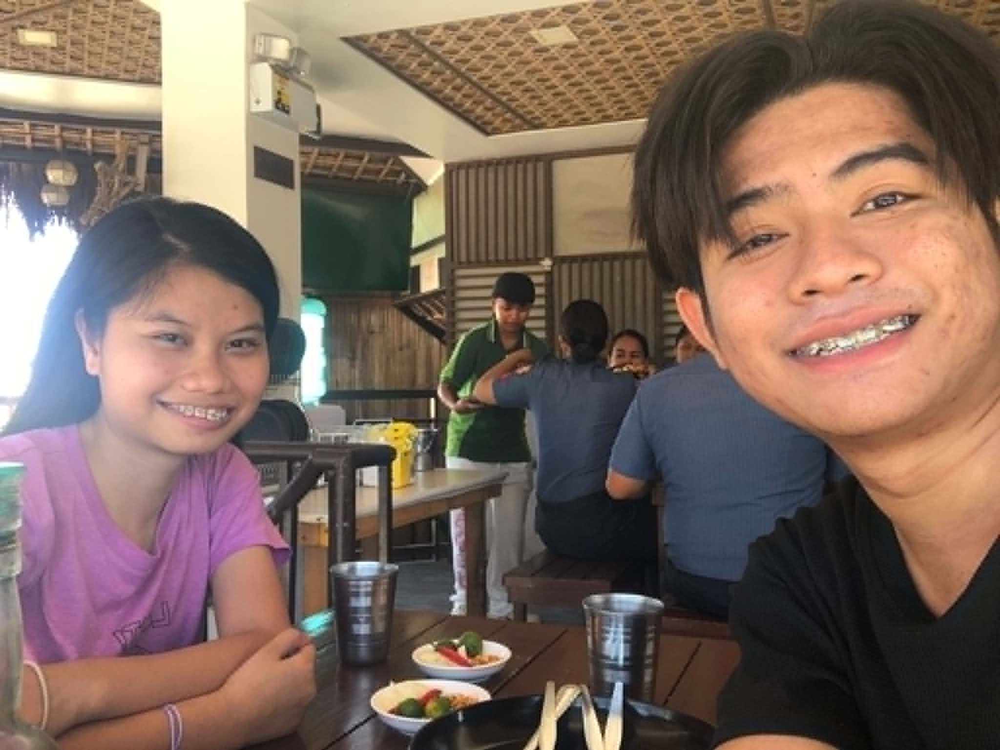

This was the moment you gave me your hand. It wasn’t the first time we held hands, but it was our second, and yet it felt just as special. Speaking of the first time, I know I’ll never forget those moments because when I held your hand, I felt a sense of peace and comfort that I can hardly put into words. The weight I had been carrying seemed to disappear, the pain faded away, and suddenly everything felt lighter and easier. The moment our hands touched, I felt a spark something warm, reassuring, and beautiful. During our second time holding hands, I felt exactly the same way. Every time I hold your hand, my heart feels lighter, my worries seem smaller, and the world feels a little brighter. Sometimes, I don’t want to let go because being connected to you in that simple way brings me a kind of happiness and comfort that I never want to lose.

This was the moment you gave me your hand. It wasn’t the first time we held hands, but it was our second, and yet it felt just as special. Speaking of the first time, I know I’ll never forget those moments because when I held your hand, I felt a sense of peace and comfort that I can hardly put into words. The weight I had been carrying seemed to disappear, the pain faded away, and suddenly everything felt lighter and easier. The moment our hands touched, I felt a spark something warm, reassuring, and beautiful. During our second time holding hands, I felt exactly the same way. Every time I hold your hand, my heart feels lighter, my worries seem smaller, and the world feels a little brighter. Sometimes, I don’t want to let go because being connected to you in that simple way brings me a kind of happiness and comfort that I never want to lose.

This was our very first picture together the first time we leaned on each other and captured a moment that would become so special to me. We took it in the place where I used to go whenever I had problems, when my mind was heavy, and when I wasn’t feeling okay. Even though we only spent a short time there, we shared countless conversations because we both wanted to know each other more deeply. I am incredibly grateful to you because that place once held only my worries and lonely thoughts, but now it holds memories of us. I used to go there alone to find comfort, but now I have you by my side, and from that moment on, I knew I wanted to share every part of my life with you and have you with me through everything.